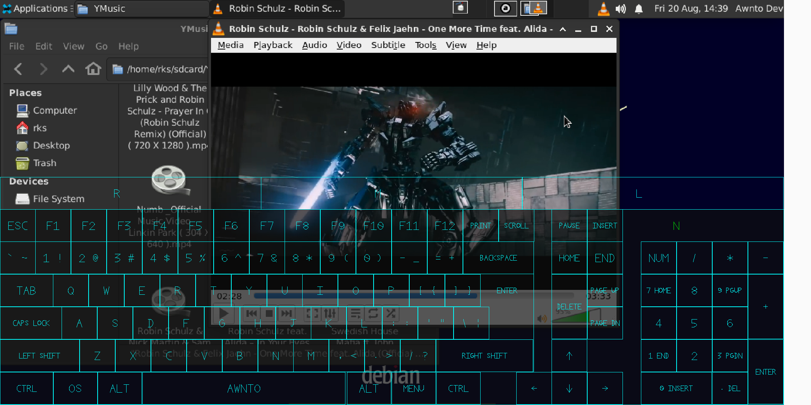
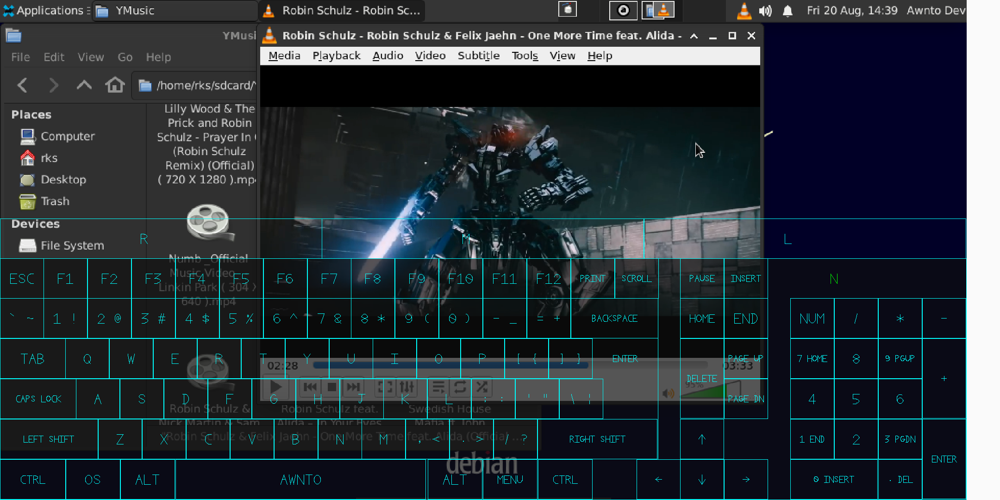

Video Guide : Youtube Watch by Awnto
Guide for How to use RNX XIO Guide for RNX Update Binaries Guide for Installing Softwares Solution for some errors in Applications How to disable phanton process killer in android Read : Features and Upcoming features in RNX List of Some Useful Softwares for RNX Report an Issue / Bug / any other error Know More About RNX Community Support Guides and FixesDownload RNX Apps
Donate to RNX
🥳🥳
Last Docs Update : 08/14/2023 Docs : version = 2.8.1 Latest RNX = V2.8.1 no need of rooted android for running RNX you can use all features of RNX without rooting your android ---------------------------------------------- === Timeline === 28/08/2023 : RNX V2.8.4 : Released on Docs X sever running on native android only for RNX XIO dynamic resolution added keyboard layout improved 13/08/2023 : RNX V2.8.1 : Released on Docs support added for playstore RNX Core UI added 1 click to shutdown option added in UI 06/08/2023 : RNX V2.7.9 : Released on Docs support added for commands "poweroff" , "reboot" and many core fixes 01/01/2023 : RNX V2.7.4 : Released on Docs updated apps xio and rnx core 08/09/2021 : RNX V2.7.2 : Released on Docs added apache2 rnx_uwax service , some minor fixes 29/08/2021 : RNX TMX Term : App Released on Docs 28/08/2021 : RNX V2.7.1 : Released on Docs project RNX started in 2018 ================ ---------------------------------------------- Screen Shots of Latest RNX 
-----------------------------------------
-----------

-----------------------------------------
----------- RNX OS - Installation Guide
---------
Index - Table
NOTE :
this is only for 64bit android devices ( aarch64 == arm64 )
RNX on Android 10+ is now supported by Play Store Version
you need to download and install RNX Core and RNX Neo Apps
then restart phone
then open RNX Core App then use RNX Neo App
Video Guide : Youtube Watch by Awnto
Author :- Rishabh Sarswa (Rishu)
 Instagram(Rishu) : Here
Instagram(Rishu) : Here
Step 1 : Download and install apps
Currently not supported on all devices and have bugs on some devices
Install Apps in order
RNX Core >> RNX Neo >> RNX XIO
other wise you may get rnx core connection error
if you installed in wrong order
don't worry force close RNX Neo then open RNX Neo again
OR restart Phone
if you getting permission error on android 10+
after installing apps from our playstore then
restart phone and open RNX Core then open RNX Neo your error will be solved
Download Apks from Download
NOTE : You need to download and install RNX Core and RNX Neo App
then restart device
after installing apps open RNX Core App
it will start loading binaries which takes about 2-3 minutes
Now open RNX Neo app
Step 2 : Installing Linux
install linux
take 260MB internet if online install
take about 1GB space but atleast 2GB free space recommended
run below command
rnx get-default-linux
then set your linux in prompt
1) select debian
2) set root password
3) user setup
This will install and setup Debian Bullseye on Android
to Start basic services
run below commands as root user
run command "su" to switch to root user
then enter your password
run command
rnx_uwax enable xio
on default display :1
xio is GUI Display for RNX
to enable RNX XIO app on startup
to disable startup service
run command
rnx_uwax disable [service_name]
eg : "rnx_uwax disable xio"
run command
rnx_uwax enable proftpd
default port 7021
proftpd is ftp server use to transfer file from other devices
to enable proftp server on startup
run command
rnx_uwax enable sshd
default port 7022
sshd is secure shell server use to open terminal other device
to enable sshd server on startup
run command "apt install xrdp" then
rnx_uwax enable xrdp
enable rdp for RNX linux you can connect RNX
to windows remote desktop
search in start menu "remote desktop"
then enter your ip address
connect your android and windows on same WiFi network
to know your phone ip run command "ip addr" in RNX Terminal
your phone wifi ip will look like "192.168.x.x" eg : 192.168.43.1
then use address "192.168.x.x" in Remote Desktop
then after log in use Xvnc and enter username and password
run command
rnx_uwax enable vncd
default port 5972 on default display :72
vncd is remote desktop use to connect display from other device
to start vnc so you can use RNX display on other devices on startup
RealVNC Client Google PlayStore
then use address "127.0.0.1::5972" in RealVNC app
to connect VNC to windows install VNC Viewer on Windows
connect your android and windows on same WiFi network
to know your phone ip run command "ip addr" in RNX Terminal
your phone wifi ip will look like "192.168.x.x" eg : 192.168.43.1
then use address "192.168.x.x::5972" in VNC Viewer
OR for fast frame rate bVNC app bvnc
connect to bvnc over server 127.0.0.1 port 5972 (GUI)
run command
rnx_uwax enable apache2
default port : 7080
default web root directory : /awnto/sdcard/AWN/web
apache2 is web server use to host websites
enable server on startup
--------------------------
----------- How to disable phantom process killer
---------
Index - Table
 in android 12 or higher android kills app processes having more than 32 process
to fix this issue connect your android to any other computer
then setup adb then command "adb devices" to check android connected or not
then run below commands
adb shell "/system/bin/device_config set_sync_disabled_for_tests persistent"
adb shell "/system/bin/device_config put activity_manager max_phantom_processes 2147483647"
adb shell settings put global settings_enable_monitor_phantom_procs false
now all done :)
--------------------------
in android 12 or higher android kills app processes having more than 32 process
to fix this issue connect your android to any other computer
then setup adb then command "adb devices" to check android connected or not
then run below commands
adb shell "/system/bin/device_config set_sync_disabled_for_tests persistent"
adb shell "/system/bin/device_config put activity_manager max_phantom_processes 2147483647"
adb shell settings put global settings_enable_monitor_phantom_procs false
now all done :)
--------------------------
Feel free to Message me if you facing any problem
Contact links are given at bottom of this page
--------------
support and options :
audio , video , opengl ,
physical keyboard , physical mouse ,
Awnto custom virtual keyboard
--------------
----------- Guide for How to use RNX XIO
---------
Index - Table
you need to enable xio app
run command to enable
"rnx_uwax enable xio"
you only need to enable xio once
------ controls -------
toggle keyboard == swipe right from left edge or swipe up from bottom
scroll == swipe touch screen
left click = single touch
drag mouse left click == touch and hold then swipe touch screen
right click == touch and hold then release finger
------------------
---------------- Guide for RNX Binaries Update -------------------
Index - Table
Update your RNX Core App
by play store
then Open RNX Core App
all done :)
-------------------------------------------------------------
----------------------------------
Youtube : Here
Twitter : Here
Instagram(Rishu) : Here
Facebook : Here
WhatsApp(Rishu) : Here
Mail : i.awnto@gmail.com
Telegram : Channnel
Telegram : Group
Telegram : Help Desk
WhatsApp : Channel
----------------------------------